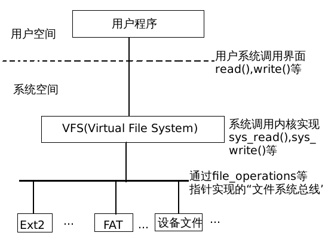

结束了进程管理，下面是文件系统，文件系统比较多，两个星期可能看不完 
文件系统概述这一节非常重要。
本章讲的是文件系统的实现细节，当然目前的文件系统已经发展到Ext4了，而在Linux2.4中仍然是Ext2的文件系统，总体上大同小异，Ext2懂了，看Ext3和Ext4也就没啥障碍了。
一、总体概揽
Linux效仿了传统UNIX但并不是抄袭，在Linux中几乎把所有设备等全部看成文件，把不同的文件系统等统一化，使用相同的系统调用等来进行操作，也就是对于一般程序员来说，根本就不必管这些东西，只要调用通用的系统调用即可。
真正将不同的文件系统等区分开来的是在底层，使用统一的“操作跳转接口”来对不同的文件进行不同的操作。
比如一个非常通用的跳转接口就是文件的操作接口file_operations，定义在include/linux/fs.h中：
struct file_operations { struct module *owner; loff_t (*llseek) (struct file *, loff_t, int); ssize_t (*read) (struct file *, char *, size_t, loff_t *); ssize_t (*write) (struct file *, const char *, size_t, loff_t *); int (*readdir) (struct file *, void *, filldir_t); unsigned int (*poll) (struct file *, struct poll_table_struct *); int (*ioctl) (struct inode *, struct file *, unsigned int, unsigned long); int (*mmap) (struct file *, struct vm_area_struct *); int (*open) (struct inode *, struct file *); int (*flush) (struct file *); int (*release) (struct inode *, struct file *); int (*fsync) (struct file *, struct dentry *, int datasync); int (*fasync) (int, struct file *, int); int (*lock) (struct file *, int, struct file_lock *); ssize_t (*readv) (struct file *, const struct iovec *, unsigned long, loff_t *); ssize_t (*writev) (struct file *, const struct iovec *, unsigned long, loff_t *); }; |
对于每种文件系统，file_operations结构是这种文件系统总所有文件等共用的，来定义对此文件系统文件等的一系列操作，当然除了file_operations以外还有其他的跳转接口，到以后再介绍。
总体来说是分下面几层的：

二、内存模块
{kind=link}
在内存里面，有着文件系统的相关信息，主要有两个，一个是inode，一个是dentry。其中这两个信息描述的侧重点不一样，inode是侧重于物理信息，dentry是侧重于逻辑信息。为什么会有这样的区分呢？因为inode可以表示一个文件在磁盘的什么位置，这个位置是唯一的，但是一个文件的文件名不是唯一的，比如在与此文件不同的目录下建立一个此文件的链接，那么无论是链接还是本文件所指的文件都是同一个，在物理上统一，但是在逻辑上不统一，新建的链接有着新的文件名等信息，在不同进程中打开也不同。一个文件只有一个inode结构，但是可以有多个dentry结构，所以它们是一对多的关系。
其中，inode数据结构定义在include/linux/fs.h中：
struct inode { struct list_head i_hash; struct list_head i_list; struct list_head i_dentry; //构成其dentry结构队列 struct list_head i_dirty_buffers; unsigned long i_ino; //唯一的节点号 atomic_t i_count; //此节点的共享计数 kdev_t i_dev; //除特殊文件外，一个索引节点所在的设备 umode_t i_mode; nlink_t i_nlink; //文件链接数目 uid_t i_uid; //用户号，与i_gid一起指明文件主 gid_t i_gid; //用户组号 kdev_t i_rdev; //若节点本身代表设备，此为设备号 loff_t i_size; //对有数据的文件，代表当前数据大小 time_t i_atime; //最后一次访问该文件时间 time_t i_mtime; //最后一次修改该文件时间 time_t i_ctime; //文件创建时间 unsigned long i_blksize; unsigned long i_blocks; unsigned long i_version; struct semaphore i_sem; struct semaphore i_zombie; struct inode_operations *i_op; //指向节点操作接口 struct file_operations *i_fop; //指向file_operations操作接口 struct super_block *i_sb; wait_queue_head_t i_wait; struct file_lock *i_flock; struct address_space *i_mapping; struct address_space i_data; struct dquot *i_dquot[MAXQUOTAS]; struct pipe_inode_info *i_pipe; struct block_device *i_bdev; unsigned long i_dnotify_mask; /* Directory notify events */ struct dnotify_struct *i_dnotify; /* for directory notifications */ unsigned long i_state; unsigned int i_flags; unsigned char i_sock; atomic_t i_writecount; unsigned int i_attr_flags; __u32 i_generation; union { //文件系统类型 struct minix_inode_info minix_i; struct ext2_inode_info ext2_i; struct hpfs_inode_info hpfs_i; struct ntfs_inode_info ntfs_i; struct msdos_inode_info msdos_i; struct umsdos_inode_info umsdos_i; struct iso_inode_info isofs_i; struct nfs_inode_info nfs_i; struct sysv_inode_info sysv_i; struct affs_inode_info affs_i; struct ufs_inode_info ufs_i; struct efs_inode_info efs_i; struct romfs_inode_info romfs_i; struct shmem_inode_info shmem_i; struct coda_inode_info coda_i; struct smb_inode_info smbfs_i; struct hfs_inode_info hfs_i; struct adfs_inode_info adfs_i; struct qnx4_inode_info qnx4_i; struct bfs_inode_info bfs_i; struct udf_inode_info udf_i; struct ncp_inode_info ncpfs_i; struct proc_inode_info proc_i; struct socket socket_i; struct usbdev_inode_info usbdev_i; void *generic_ip; } u; }; |
dentry数据结构是定义在include/linux/dcache.h中：
struct dentry { atomic_t d_count; unsigned int d_flags; struct inode * d_inode; /* Where the name belongs to - NULL is negative */ struct dentry * d_parent; /* parent directory */ struct list_head d_vfsmnt; struct list_head d_hash; /* lookup hash list */ struct list_head d_lru; /* d_count = 0 LRU list */ struct list_head d_child; /* child of parent list */ struct list_head d_subdirs; /* our children */ struct list_head d_alias; /* inode alias list */ struct qstr d_name; unsigned long d_time; /* used by d_revalidate */ struct dentry_operations *d_op; struct super_block * d_sb; /* The root of the dentry tree */ unsigned long d_reftime; /* last time referenced */ void * d_fsdata; /* fs-specific data */ unsigned char d_iname[DNAME_INLINE_LEN]; /* small names */ }; |
这里可以看到dentry结构里面有个inode结构d_inode，指向真正的inode结构。
介绍完这两个数据结构以后我们看看在task_struct结构中的部分文件有关内容：
在task_struct中有两个文件相关：
struct fs_struct *fs;
struct files_struct *files;
fs_struct结构定义如下（include/linux/fs_struct.h）：
struct fs_struct { atomic_t count; rwlock_t lock; int umask; struct dentry * root, * pwd, * altroot; struct vfsmount * rootmnt, * pwdmnt, * altrootmnt; }; |
这三个dentry中，root指向根目录，pwd指向当前目录，altroot指向为用户设置的“替换根目录”。
files是记录已打开文件表，进程每打开一个文件，就会通过一个打开的文件号fid来访问这个文件，fid实际上是相应file结构在数组中的下标，指向特定的file结构，每个file结构中都有一个dentry指针指向文件的dentry结构，这个dentry结构并不是这个进程特有的，而是通用的，每个文件只有一个dentry结构，而可能有多个进程打开它，所以当每个进程打开的是同一个文件的时候，其所指的dentry结构是同一个。
总的来说，在进程中，有如下图示：
{kind=link}
三、磁盘模块
与inode和dentry相对应，在磁盘中也有相应数据结构，不过它们不是存储在内存中哦给的，而是在磁盘中的，对于Ext2文件系统而言，inode对应的数据结构是ext2_inode，数据结构定义如下（include/linux/ext2_fs.h）：
struct ext2_inode { __u16 i_mode; /* File mode */ __u16 i_uid; /* Low 16 bits of Owner Uid */ __u32 i_size; /* Size in bytes */ __u32 i_atime; /* Access time */ __u32 i_ctime; /* Creation time */ __u32 i_mtime; /* Modification time */ __u32 i_dtime; /* Deletion Time */ __u16 i_gid; /* Low 16 bits of Group Id */ __u16 i_links_count; /* Links count */ __u32 i_blocks; /* Blocks count */ __u32 i_flags; /* File flags */ union { struct { __u32 l_i_reserved1; } linux1; struct { __u32 h_i_translator; } hurd1; struct { __u32 m_i_reserved1; } masix1; } osd1; /* OS dependent 1 */ __u32 i_block[EXT2_N_BLOCKS];/* Pointers to blocks */ __u32 i_generation; /* File version (for NFS) */ __u32 i_file_acl; /* File ACL */ __u32 i_dir_acl; /* Directory ACL */ __u32 i_faddr; /* Fragment address */ union { struct { __u8 l_i_frag; /* Fragment number */ __u8 l_i_fsize; /* Fragment size */ __u16 i_pad1; __u16 l_i_uid_high; /* these 2 fields */ __u16 l_i_gid_high; /* were reserved2[0] */ __u32 l_i_reserved2; } linux2; struct { __u8 h_i_frag; /* Fragment number */ __u8 h_i_fsize; /* Fragment size */ __u16 h_i_mode_high; __u16 h_i_uid_high; __u16 h_i_gid_high; __u32 h_i_author; } hurd2; struct { __u8 m_i_frag; /* Fragment number */ __u8 m_i_fsize; /* Fragment size */ __u16 m_pad1; __u32 m_i_reserved2[2]; } masix2; } osd2; /* OS dependent 2 */ }; |
文件的存储是按照树形结构存储的，以根目录为树根，各个具体的文件为树叶。其中通过各个索引节点等来进行遍历搜索。在ext2_inode没有文件名，文件名是存储在与ext2_dir_entry_2中，这个数据结构是与dentry相对应（事实上这些都是一些对inode和dentry的扩充）。
struct ext2_dir_entry_2 { __u32 inode; /* Inode number */ __u16 rec_len; /* Directory entry length */ __u8 name_len; /* Name length */ __u8 file_type; char name[EXT2_NAME_LEN]; /* File name */ }; |
磁盘上的“超级块”存储的是系统的“根目录”信息，目录本身也是一种文件，目录的目录项又在另一个目录中，这样的话从根目录开始遍历就可以找到所有节点和文件。
从磁盘的角度来看，一个磁盘分区可以分为以下几个区：
| 引导 | 超级快 | 索引节点部分 | 数据部分 |
需要指出的是在磁盘上每个文件都有目录项和索引节点，但是只有在需要时才在内存中为之建立起相应的dentry和inode数据结构。
The End.